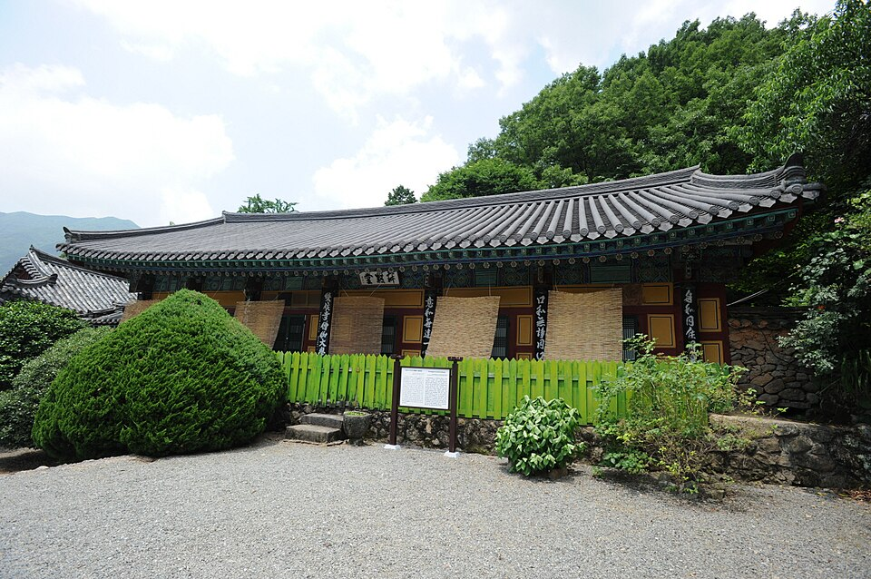

하동 검정고시 — 40·50대에 다시 시작할 때 걸리는 것들

마흔이 넘어, 쉰이 넘어 다시 공부를 시작하시는 분들이 처음 하시는 말씀은 대개 비슷합니다. “머리가 예전 같지 않아서요.” 그런데 몇 주 같이 해 보면 진짜 걸림돌은 기억력이 아닌 경우가 더 많습니다. 하동 검정고시를 마음에 두고 계신다면, 실제로 걸리는 것들을 먼저 알고 시작하시면 훨씬 수월합니다.
기억력보다 먼저 손볼 것은 ‘반복 간격’입니다
나이가 들면 한 번 봐서 외우는 힘은 줄어듭니다. 대신 여러 번 나눠서 보면 그대로 남습니다. 한 시간을 한 번에 쓰는 것보다 20분씩 세 번에 나눠 쓰는 쪽이 훨씬 오래갑니다.
그래서 계획도 “오늘 몇 쪽”보다 “이 내용을 이번 주에 몇 번 볼 것인가”로 잡습니다. 같은 단원을 월·수·금 세 번 보는 식으로요. 처음 볼 때 잘 안 외워졌다고 실망하지 않으셔도 됩니다. 두 번째, 세 번째에 남는 게 정상입니다.
모르는 걸 물어보기 어려울 때
늦게 시작하신 분들이 가장 자주 멈추는 지점입니다. 너무 기본적인 걸 묻는 것 같아 입이 안 떨어지고, 그렇게 한 번 넘어간 부분이 나중에 발목을 잡습니다.
- 모르는 건 적어 둡니다 — 그 자리에서 못 물어봤으면 종이 한 귀퉁이에 적어 두었다가 수업 때 한꺼번에 묻습니다. 적어 두면 그냥 넘어가지지 않습니다.
- “어디까지 알겠는지”로 말합니다 — “모르겠어요”보다 “여기까진 알겠는데 그다음이 안 됩니다”가 훨씬 빨리 해결됩니다.
- 1:1이 유리한 이유 — 여럿이 있는 자리에서는 아무래도 묻기 어렵습니다. 둘이 하는 수업에서는 그 부담이 없습니다.
일과 집안일 사이에서 시간을 지키는 법
시간이 없어서 못 하는 게 아니라, 있는 시간이 매번 다른 일에 밀려서 못 하는 경우가 많습니다. 그래서 하루 중 가장 방해받지 않는 시간대 하나를 정해 두는 게 낫습니다. 이른 아침이든 저녁 늦게든, 매일 같은 시간이면 몸이 먼저 기억합니다.
그리고 그 시간은 짧아도 괜찮습니다. 30분을 매일 지키는 분이 주말에 몰아서 네 시간 하는 분보다 훨씬 멀리 갑니다.
한 번에 다 보지 않아도 됩니다
검정고시는 전 과목 평균 60점 이상이면 합격이고, 60점을 넘긴 과목은 과목 합격으로 남습니다. 전 과목을 한꺼번에 준비할 여유가 없으시면, 할 수 있는 과목부터 확실히 끝내 놓고 나머지를 다음에 이어 가는 방법이 있습니다. 부담이 확 줄어들고, 무엇보다 끝낸 과목이 생기면 계속할 힘이 생깁니다.
하동에서 이렇게 함께합니다
저희는 1:1 맞춤 과외라 진도를 나이나 학년이 아니라 지금 아는 자리에 맞춥니다. 오래 쉬셨다면 기초부터 천천히 시작하고, 생각보다 잘 따라오시면 속도를 올립니다. 늦게 시작하셨다는 이유로 민망할 일은 전혀 없습니다. 하동과 인근 지역은 방문 수업이 가능하고, 이동이 부담되면 화상(줌) 수업으로 집에서 그대로 진행합니다.